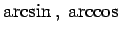
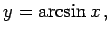
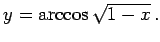

Inhalt Index DeskTop Bronstein

 Funktionen und ihre Darstellung Elementare Funktionen Transzendente Funktionen
Funktionen und ihre Darstellung Elementare Funktionen Transzendente Funktionen


Bei den inversen trigonometrischen Funktionen befindet sich die Variable x oder eine algebraische Funktion von x im Argument des  usw.
| Beispiel A |
|
 |
| Beispiel B |
|
 |